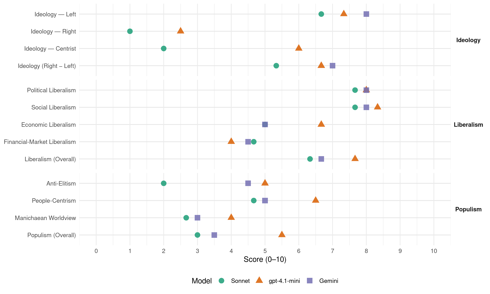

LSDP (Lithuania, 2008)
manifesto_id 88320_200810
Get full text: This site shows derived annotations and short verbatim quotes only. The full manifesto text is © Manifesto Project / WZB — obtain it via manifesto-project.wzb.eu using the manifesto_id above.
Headline scores
| Dimension | Sonnet | gpt-4.1-mini | Gemini |
|---|---|---|---|
| Populism (Overall) | 3.0 | 5.5 | 3.5 |
| Anti-Elitism | 2.0 | 5.0 | 4.5 |
| People-Centrism | 4.7 | 6.5 | 5.0 |
| Manichaean Worldview | 2.7 | 4.0 | 3.0 |
| Ideology (Right − Left) | 5.3 | 6.7 | 7.0 |
| Liberalism (Overall) | 6.3 | 7.7 | 6.7 |
| Political Liberalism | 7.7 | 8.0 | 8.0 |
| Social Liberalism | 7.7 | 8.3 | 8.0 |
| Economic Liberalism | 5.0 | 6.7 | 5.0 |
| Financial-Market Liberalism | 4.7 | 4.0 | 4.5 |
Evidence per dimension
Economic Liberalism
Gemini · score 5.0 · verified · chunk 1
“mes esame už rinkos ekonomiką žmogišku veidu”
daug žalos Lietuvai atnešusias laukinio kapitalizmo apraiškas, mes esame už rinkos ekonomiką žmogišku veidu - už socialiai
Gemini · score 5.0 · mixed · chunk 2
“rinka ir konkurencija yra galingi ekonomikos”
yra pagrįstas šiomis nuostatomis: - rinka ir konkurencija yra galingi ekonomikos plėtros varikliai, tačiau nei viena
Gemini · score 5.0 · verified · chunk 3
“išsaugančios socialinės rinkos ekonomiką”
Europos Sąjungos, išsaugančios socialinės rinkos ekonomiką ir solidarumą tarp valstybių
gpt-4.1-mini · score 7.0 · verified · chunk 1
“mes esame už rinkos ekonomiką žmogišku veidu - už socialiai orientuotą rinkos ekonomiką”
LSDP išlieka ištikima Socialistų Internacionalo vertybėms ir principams. Laisvė, socialinis teisingumas bei solidarumas yra mūsų politinės veiklos gairės. Pasisakydami prieš daug žalos Lietuvai atnešusias laukinio kapitalizmo apraiškas, mes esame už rinkos ekonomiką žmogišku veidu - už socialiai orientuotą rinkos ekonomiką…
gpt-4.1-mini · score 6.0 · verified · chunk 2
“socialinę rinkos ekonomiką, kurioje asmeninis ryžtas, pastangos bei konkurencija derinami su socialiniu teisingumu”
Mes pasisakome už socialinę rinkos ekonomiką, kurioje asmeninis ryžtas, pastangos bei konkurencija derinami su socialiniu teisingumu, solidarumu, o palankios sąlygos verslui sudaromos nepamirštant socialinės valstybės atsakomybės.
gpt-4.1-mini · score 7.0 · verified · chunk 3
“ekonominis augimas, aplinką tausojančią plėtrą, visuotinį užimtumą ir socialinę sanglaudą”
Būtent Europos socialistų partiją sudarančios Europos Sąjungos valstybių narių partijos patvirtino šią strategiją, kaip iki 2010 m. Europą paversti labiausiai dinamiška, žiniomis pagrįsta ekonomine erdve pasaulyje, pajėgia užtikrinti ekonominį augimą, aplinką tausojančią plėtrą, visuotinį užimtumą ir socialinę sanglaudą. Būtent dabar, kai Europos Sąjungoje vėl dominuoja dešiniosios jėgos, mes, socialdemokratai, privalome ypač energingai dirbti,
Sonnet · score 5.0 · verified · chunk 1
“socialiai orientuotą rinkos ekonomiką”
mes esame už rinkos ekonomiką žmogišku veidu - už socialiai orientuotą rinkos ekonomiką
Sonnet · score 5.0 · mixed · chunk 2
“rinka ir konkurencija yra galingi ekonomikos plėtros varikliai”
rinka ir konkurencija yra galingi ekonomikos plėtros varikliai, tačiau nei viena, nei kita savaime neužtikrina nei užimtumo
Sonnet · score 5.0 · verified · chunk 3
“socialinės rinkos ekonomiką ir solidarumą”
siekiame solidaresnės, stipresnės Europos Sąjungos, išsaugančios socialinės rinkos ekonomiką ir solidarumą tarp valstybių narių
Financial-Market Liberalism
Gemini · score 4.0 · verified · chunk 1
“ekonomikos, prekybos, kapitalų, finansų sistemos globalizacija didina socialinius skirtumus”
neatnešė teisingumo, o ypač socialinio teisingumo. Šiandieninė ekonomikos, prekybos, kapitalų, finansų sistemos globalizacija didina socialinius skirtumus tarp
Gemini · score 5.0 · verified · chunk 3
“Euro įvedimas Lietuvoje atneš”
integraciją į vieningą Europos Sąjungos erdvę. Euro įvedimas Lietuvoje atneš savų trumpalaikių sunkumų, tačiau
gpt-4.1-mini · score 4.0 · verified · chunk 2
“indėlių draudimą ne tik fiziniams, bet ir juridiniams asmenims”
Monetarinę politiką galima keisti tik esant bendram sutarimui, jos negalima naudoti kaip rinkimų kovos priemonės. Monetarinė politika turi tarnauti visuomenei - bet koks pinigų politikos keitimas veikia ir visą ūkį, lemia jo stabilumą. Mes pasisakome už indėlių draudimą ne tik fiziniams, bet ir juridiniams asmenims.
Sonnet · score 4.0 · verified · chunk 1
“monetariniais, mokestiniais, teisiniais perskirstymo instrumentais”
socialinio teisingumo tikslai yra įgyvendinami monetariniais, mokestiniais, teisiniais perskirstymo instrumentais
Sonnet · score 5.0 · verified · chunk 2
“indėlių draudimą ne tik fiziniams, bet ir juridiniams asmenims”
Mes pasisakome už indėlių draudimą ne tik fiziniams, bet ir juridiniams asmenims
Sonnet · score 5.0 · verified · chunk 3
“Bretono Wudo (Bretton Woods) sistemos reformai”
ieškoma kelių Junginių Tautų reformai, Bretono Wudo (Bretton Woods) sistemos reformai, nagrinėjama globalizacijos įtaka
Political Liberalism
Gemini · score 8.0 · verified · chunk 1
“įstatymų leidžiamoji, vykdomoji ir teisminė valdžios yra Konstitucijos atskirtos”
būtų sutelktos vienoje valdžios šakoje. Įstatymų leidžiamoji, vykdomoji ir teisminė valdžios yra Konstitucijos atskirtos.
Gemini · score 8.0 · verified · chunk 2
“Konstitucija, įtvirtinanti žmogaus teises ir laisves”
Mums politinė demokratija: - tai Konstitucija, įtvirtinanti žmogaus teises ir laisves bei jų apsaugą, tai valstybės sąranga
Gemini · score 8.0 · verified · chunk 3
“skatinti Europoje demokratiją ir lygybę”
žmogų; - skatinti Europoje demokratiją ir lygybę. 166. 2000 m., kai iš penkiolikos
gpt-4.1-mini · score 8.0 · verified · chunk 1
“žmogaus teises ir laisves nuo kitų žmonių ar valstybių kėsinimosi jas apriboti”
Pastaroji valstybės vardu gina žmogaus teises ir laisves nuo kitų žmonių ar valstybių kėsinimosi jas apriboti, arba savivaldybės vardu - užtikrina žmogaus socialinius ir ekonominius poreikius…
gpt-4.1-mini · score 8.0 · verified · chunk 2
“Konstitucijos viršenybės; - visuomenės iniciatyvos skatinimo”
Mes pasisakome už tvirtą politinę demokratiją, už atvirą pilietinę Lietuvos visuomenę, todėl laikomės šių principų: - Konstitucijos viršenybės; - visuomenės iniciatyvos skatinimo - valstybės nedalyvavimo ten, kur visuomenės organizacijos sugeba tvarkytis savarankiškai;
gpt-4.1-mini · score 8.0 · verified · chunk 3
“skatinti Europoje demokratiją ir lygybę”
- kurti saugesnį, stabilesnį, taikingesnį ir teisingesnį pasaulį, tausojantį aplinką ir žmogų; - skatinti Europoje demokratiją ir lygybę. 166. 2000 m., kai iš penkiolikos Europos Sąjungos valstybių trylika valdė socialdemokratinės, socialistinės ar leiboristinės vyriausybės, buvo pirmą kartą parengta ilgalaikė Europos Sąjungos plėtros strategija,
Sonnet · score 8.0 · verified · chunk 1
“pasisakome už parlamentarizmą”
Mes pasisakome už parlamentarizmą, kaip rezultatyviausią įvairių visuomenės grupių - socialinių, nacionalinių, politinių, kultūrinių, religinių - dialogo formą
Sonnet · score 8.0 · verified · chunk 2
“Konstitucijos viršenybės”
laikomės šių principų: - Konstitucijos viršenybės; - visuomenės iniciatyvos skatinimo - valstybės nedalyvavimo
Sonnet · score 7.0 · verified · chunk 3
“skatinti Europoje demokratiją ir lygybę”
kurti saugesnį, stabilesnį, taikingesnį ir teisingesnį pasaulį; - skatinti Europoje demokratiją ir lygybę
Liberalism (Overall)
Gemini · score 6.0 · verified · chunk 1
“įstatymų leidžiamoji, vykdomoji ir teisminė valdžios yra Konstitucijos atskirtos”
būtų sutelktos vienoje valdžios šakoje. Įstatymų leidžiamoji, vykdomoji ir teisminė valdžios yra Konstitucijos atskirtos.
Gemini · score 7.0 · verified · chunk 2
“Konstitucija, įtvirtinanti žmogaus teises ir laisves”
Mums politinė demokratija: - tai Konstitucija, įtvirtinanti žmogaus teises ir laisves bei jų apsaugą, tai valstybės sąranga
Gemini · score 7.0 · verified · chunk 3
“išsaugančios socialinės rinkos ekonomiką”
Europos Sąjungos, išsaugančios socialinės rinkos ekonomiką ir solidarumą tarp valstybių
gpt-4.1-mini · score 8.0 · verified · chunk 1
“žmogaus teisių ir laisvių pirmenybė visose srityse; - moterų ir vyrų lygių galimybių įgyvendinimas”
Mes į demokratiją žiūrime kaip į indą, kurį reikia užpildyti realiu turiniu. Mums demokratija - tai: - morali, etiniais įsitikinimais paremta politika… žmogaus teisių ir laisvių pirmenybė visose srityse; - moterų ir vyrų lygių galimybių įgyvendinimas…
gpt-4.1-mini · score 7.0 · verified · chunk 2
“Konstitucijos viršenybės; - visuomenės iniciatyvos skatinimo”
Mes pasisakome už tvirtą politinę demokratiją, už atvirą pilietinę Lietuvos visuomenę, todėl laikomės šių principų: - Konstitucijos viršenybės; - visuomenės iniciatyvos skatinimo - valstybės nedalyvavimo ten, kur visuomenės organizacijos sugeba tvarkytis savarankiškai;
gpt-4.1-mini · score 8.0 · verified · chunk 3
“skatinti Europoje demokratiją ir lygybę”
- kurti saugesnį, stabilesnį, taikingesnį ir teisingesnį pasaulį, tausojantį aplinką ir žmogų; - skatinti Europoje demokratiją ir lygybę. 166. 2000 m., kai iš penkiolikos Europos Sąjungos valstybių trylika valdė socialdemokratinės, socialistinės ar leiboristinės vyriausybės, buvo pirmą kartą parengta ilgalaikė Europos Sąjungos plėtros strategija,
Sonnet · score 6.0 · verified · chunk 1
“pasisakome už parlamentarizmą”
Mes pasisakome už parlamentarizmą, kaip rezultatyviausią įvairių visuomenės grupių dialogo formą
Sonnet · score 7.0 · verified · chunk 2
“Konstitucijos viršenybės”
laikomės šių principų: - Konstitucijos viršenybės; - visuomenės iniciatyvos skatinimo
Sonnet · score 6.0 · verified · chunk 3
“laisvės, demokratijos, socialinio teisingumo”
Lietuvos, ir Europos Sąjungos, ir pasaulio raidą laisvės, demokratijos, socialinio teisingumo ir solidarumo kryptimi
Anti-Elitism
Gemini · score 4.0 · verified · chunk 1
“gyvenimas gerėtų visiems, o ne mažai daliai “išrinktųjų””
Mes siekiame, kad: - gyvenimas gerėtų visiems, o ne mažai daliai “išrinktųjų”; - mūsų vaikai ir anūkai
Gemini · score 5.0 · verified · chunk 2
“neatsakingo ir daugumai gyventojų neatstovaujančio dešiniųjų valdymo”
priemones įveikti krizei, sukeltai neatsakingo ir daugumai gyventojų neatstovaujančio dešiniųjų valdymo. Taip pat atsako į pagrindinius
gpt-4.1-mini · score 7.0 · verified · chunk 1
“rinkėjų balsų pirkimo fenomenas”
…rinkėjų mažai domisi politinėmis, ekonominėmis ir socialinėmis programomis, jie yra vis daugiau veikiami viešųjų ryšių ir pinigų. Vis ryškesnis rinkėjų balsų pirkimo fenomenas, lemiantis turtingesnių ir populistiškesnių politikų pergales. Rinkiminės kampanijos reikalauja vis daugiau pinigų ir viešųjų ryšių paslaugų, nustumdamos į antrą planą…
gpt-4.1-mini · score 3.0 · verified · chunk 2
“neatsakingo ir daugumai gyventojų neatstovaujančio dešiniųjų valdymo”
…rengti konkrečias būtiniausias priemones įveikti krizei, sukeltai neatsakingo ir daugumai gyventojų neatstovaujančio dešiniųjų valdymo. Taip pat atsako į pagrindinius naujos - SOCIALINĖS GEROVĖS VISIEMS VALSTYBĖS - politikos uždavinius.
Sonnet · score 4.0 · mixed · chunk 1
“laukinio kapitalizmo apraiškas”
Pasisakydami prieš daug žalos Lietuvai atnešusias laukinio kapitalizmo apraiškas, mes esame už rinkos ekonomiką žmogišku veidu
Sonnet · score 4.0 · mixed · chunk 2
“neatsakingo ir daugumai gyventojų neatstovaujančio dešiniųjų valdymo”
priemones įveikti krizei, sukeltai neatsakingo ir daugumai gyventojų neatstovaujančio dešiniųjų valdymo
Sonnet · score 2.0 · verified · chunk 3
“dešiniosios jėgos, mes, socialdemokratai”
kai Europos Sąjungoje vėl dominuoja dešiniosios jėgos, mes, socialdemokratai, privalome ypač energingai dirbti
Ideology — Centrist
gpt-4.1-mini · score 6.0 · verified · chunk 1
“mes pripažįstame vertybių visumą, kuri neatmeta nei laisvės, nei teisingumo, nei lygybės, nei solidarumo”
Mes pripažįstame vertybių visumą, kuri neatmeta nei laisvės, nei teisingumo, nei lygybės, nei solidarumo. Liberalai ir konservatoriai pirmumą teikia asmens laisvei…
gpt-4.1-mini · score 6.0 · verified · chunk 2
“bendras vertybes”
Tai solidari, socialiai orientuota Europos Sąjunga su lygiomis visų jos valstybių narių ir piliečių teisėmis, išpažįstanti bendras vertybes.
Sonnet · score 2.0 · verified · chunk 1
“gyvenimas gerėtų visiems, o ne mažai daliai”
Mes siekiame, kad: - gyvenimas gerėtų visiems, o ne mažai daliai “išrinktųjų”
Sonnet · score 2.0 · verified · chunk 2
“individualių, grupinių ir visuomeninių interesų darna”
Tai - individualių, grupinių ir visuomeninių interesų darna. Laisvė, žmogaus teisės, socialinis teisingumas
Sonnet · score 2.0 · verified · chunk 3
“priartinti Europos Sąjungos sprendimus arčiau piliečių”
skatinti Europos vystymąsi, šalinti skurdą; - priartinti Europos Sąjungos sprendimus arčiau piliečių
Ideology — Left
Gemini · score 8.0 · verified · chunk 1
“gynėja nuo agresyvaus kapitalo antihumaniškų veiksmų”
Atsiradusi Europoje XIX šimtmetyje kaip išnaudojamų žmonių gynėja nuo agresyvaus kapitalo antihumaniškų veiksmų, feodalinei valstietiškai
Gemini · score 8.0 · verified · chunk 2
“iškėlė nuosavybės teisę aukščiau už žmogaus teises”
milžinišką gamybinę galią, bet kartu ji iškėlė nuosavybės teisę aukščiau už žmogaus teises. Ekonomikos globalizacija suvienijo valstybes lyderes
gpt-4.1-mini · score 8.0 · verified · chunk 1
“mes esame už rinkos ekonomiką žmogišku veidu - už socialiai orientuotą rinkos ekonomiką”
LSDP išlieka ištikima Socialistų Internacionalo vertybėms ir principams. Laisvė, socialinis teisingumas bei solidarumas yra mūsų politinės veiklos gairės. Pasisakydami prieš daug žalos Lietuvai atnešusias laukinio kapitalizmo apraiškas, mes esame už rinkos ekonomiką žmogišku veidu - už socialiai orientuotą rinkos ekonomiką…
gpt-4.1-mini · score 7.0 · verified · chunk 2
“socialinio teisingumo, solidarumo, lygybės”
Demokratinis socializmas - tai pasaulėžiūra, sujungianti laisvės, socialinio teisingumo, solidarumo, lygybės, taikos, demokratijos, pagarbos žmogaus teisėms ir jo orumui fundamentaliąsias vertybes į vieningą visumą.
gpt-4.1-mini · score 7.0 · verified · chunk 3
“kovoti už socialinį teisingumą kiekvienos šalies viduje”
Kartu su Europos Sąjungos valstybių narių socialistais, socialdemokratais ir leiboristais įsipareigojome kovoti už socialinį teisingumą kiekvienos šalies viduje ir už solidarumą tarp šalių, kuriant stiprią Europos Sąjungą. Per penkerius metus Europos parlamente mes įsipareigojome savo rinkėjams įvykdyti šiuos penkis pažadus:
Sonnet · score 6.0 · verified · chunk 1
“teisingesnį perskirstymą tarp darbo ir kapitalo”
kokiais metodais galima užtikrinti teisingesnį perskirstymą tarp darbo ir kapitalo, teisingesnį gamtos išteklių paskirstymą
Sonnet · score 7.0 · verified · chunk 2
“socialinio teisingumo, solidarumo, demokratiją ir žmogaus teises”
tarptautinis judėjimas už taiką, socialinio teisingumo, solidarumo, demokratiją ir žmogaus teises visame pasaulyje
Sonnet · score 7.0 · verified · chunk 3
“socialinį teisingumą kiekvienos šalies viduje”
įsipareigojome kovoti už socialinį teisingumą kiekvienos šalies viduje ir už solidarumą tarp šalių
Ideology (Right − Left)
Gemini · score 7.0 · verified · chunk 1
“gynėja nuo agresyvaus kapitalo antihumaniškų veiksmų”
Atsiradusi Europoje XIX šimtmetyje kaip išnaudojamų žmonių gynėja nuo agresyvaus kapitalo antihumaniškų veiksmų, feodalinei valstietiškai
Gemini · score 7.0 · verified · chunk 2
“iškėlė nuosavybės teisę aukščiau už žmogaus teises”
milžinišką gamybinę galią, bet kartu ji iškėlė nuosavybės teisę aukščiau už žmogaus teises. Ekonomikos globalizacija suvienijo valstybes lyderes
gpt-4.1-mini · score 7.0 · verified · chunk 1
“mes esame už rinkos ekonomiką žmogišku veidu - už socialiai orientuotą rinkos ekonomiką”
LSDP išlieka ištikima Socialistų Internacionalo vertybėms ir principams. Laisvė, socialinis teisingumas bei solidarumas yra mūsų politinės veiklos gairės. Pasisakydami prieš daug žalos Lietuvai atnešusias laukinio kapitalizmo apraiškas, mes esame už rinkos ekonomiką žmogišku veidu - už socialiai orientuotą rinkos ekonomiką…
gpt-4.1-mini · score 6.0 · verified · chunk 2
“socialinio teisingumo, solidarumo, lygybės”
Demokratinis socializmas - tai pasaulėžiūra, sujungianti laisvės, socialinio teisingumo, solidarumo, lygybės, taikos, demokratijos, pagarbos žmogaus teisėms ir jo orumui fundamentaliąsias vertybes į vieningą visumą.
gpt-4.1-mini · score 7.0 · verified · chunk 3
“kovoti už socialinį teisingumą kiekvienos šalies viduje”
Kartu su Europos Sąjungos valstybių narių socialistais, socialdemokratais ir leiboristais įsipareigojome kovoti už socialinį teisingumą kiekvienos šalies viduje ir už solidarumą tarp šalių, kuriant stiprią Europos Sąjungą. Per penkerius metus Europos parlamente mes įsipareigojome savo rinkėjams įvykdyti šiuos penkis pažadus:
Sonnet · score 5.0 · verified · chunk 1
“teisingesnį perskirstymą tarp darbo ir kapitalo”
kokiais metodais galima užtikrinti teisingesnį perskirstymą tarp darbo ir kapitalo
Sonnet · score 6.0 · verified · chunk 2
“demokratinio socializmo siūlomi keliai”
Įveikti piliečių susvetimėjimą gali tik demokratinio socializmo siūlomi keliai
Sonnet · score 5.0 · verified · chunk 3
“socialinio teisingumo ir solidarumo kryptimi”
Lietuvos, ir Europos Sąjungos, ir pasaulio raidą laisvės, demokratijos, socialinio teisingumo ir solidarumo kryptimi
Ideology — Right
gpt-4.1-mini · score 3.0 · verified · chunk 1
“panaikina laisvę. Komunistai lygybės ir solidarumo siekia laisvės sąskaita”
Liberalai ir konservatoriai pirmumą teikia asmens laisvei, ir teisingumą bei solidarumą aukoja laisvės vardan. Bet tai sukelia didelę nelygybę ir panaikina laisvę. Komunistai lygybės ir solidarumo siekia laisvės sąskaita…
gpt-4.1-mini · score 2.0 · verified · chunk 2
“nepriklausomai nuo jo tautybės ar pasaulėžiūros, garantuoja, lygias politines, ekonomines, socialines ir kultūrines teises”
Mūsų pozicija tautinių bendrijų atžvilgiui yra aiški. Mes už valstybę, kuri savo piliečiui, nepriklausomai nuo jo tautybės ar pasaulėžiūros, garantuoja, lygias politines, ekonomines, socialines ir kultūrines teises bei laisves.
Sonnet · score 1.0 · verified · chunk 1
“tautų tapatumo, jų kultūrinės įvairovės išsaugojimas”
ypač svarbiu uždaviniu tampa tautų tapatumo, jų kultūrinės įvairovės išsaugojimas
Sonnet · score 1.0 · verified · chunk 2
“suvaldyti nelegalią migraciją”
priartinti Europos Sąjungos sprendimus arčiau piliečių; suvaldyti nelegalią migraciją ir siekti socialinės integracijos
Sonnet · score 1.0 · verified · chunk 3
“suvaldyti nelegalią migraciją”
priartinti Europos Sąjungos sprendimus arčiau piliečių; - suvaldyti nelegalią migraciją ir siekti socialinės integracijos
Manichaean Worldview
Gemini · score 3.0 · verified · chunk 1
“prieštaravusių dešiniųjų valdžios vykdytai griovimo ir skurdinimo politikai”
kairiųjų pažiūrų žmones, prieštaravusių dešiniųjų valdžios vykdytai griovimo ir skurdinimo politikai. Ji sutelkė žmones
gpt-4.1-mini · score 5.0 · mixed · chunk 1
“rinkėjų mažai domisi politinėmis, ekonominėmis ir socialinėmis programomis, jie yra vis daugiau veikiami viešųjų ryšių ir pinigų”
…rinkėjų mažai domisi politinėmis, ekonominėmis ir socialinėmis programomis, jie yra vis daugiau veikiami viešųjų ryšių ir pinigų. Vis ryškesnis rinkėjų balsų pirkimo fenomenas, lemiantis turtingesnių ir populistiškesnių politikų pergales…
gpt-4.1-mini · score 4.0 · verified · chunk 2
“sovietiniu socializmu”
…sustingusį dogmatizmą, siekė aštrinti įvairius prieštaravimus. Taip buvo įtvirtinta vienos partijos diktatūra, kuri panaikino laisvę, sukūrė privilegijų kontrastus ir įvedė prievartos darbą. Tai buvo vadinama sovietiniu socializmu.
Sonnet · score 3.0 · verified · chunk 1
“neatsakingo ir daugumai gyventojų neatstovaujančio dešiniųjų valdymo”
priemones įveikti krizei, sukeltai neatsakingo ir daugumai gyventojų neatstovaujančio dešiniųjų valdymo
Sonnet · score 3.0 · verified · chunk 2
“vienos partijos diktatūra, kuri panaikino laisvę”
Taip buvo įtvirtinta vienos partijos diktatūra, kuri panaikino laisvę, sukūrė privilegijų kontrastus
Sonnet · score 2.0 · verified · chunk 3
“konkurenciją, siekiančią tik pelno ir jos plėšrumą”
solidarios kooperacijos sugyvenimo principas tarp žmonių, organizacijų bei tautų prieš konkurenciją, siekiančią tik pelno ir jos plėšrumą
People-Centrism
Gemini · score 5.0 · verified · chunk 1
“parodyti Lietuvos žmonėms, kaip mažiausiai skausmingu keliu”
Programos tikslas - parodyti Lietuvos žmonėms, kaip mažiausiai skausmingu keliu sukurti Lietuvoje socialinės
Gemini · score 5.0 · verified · chunk 2
“Europos piliečių dalyvavimą sprendžiant Europos”
teisės aktus. Mes už aktyvų Europos piliečių dalyvavimą sprendžiant Europos Sąjungos reikalus. Europos Sąjunga reikalauja
gpt-4.1-mini · score 8.0 · verified · chunk 1
“Lietuvos žmonėms, kaip mažiausiai skausmingu keliu sukurti Lietuvoje socialinės GEROVĖS VISIEMS VALSTYBĘ”
Ši Lietuvos socialdemokratų partijos programa yra jos politinis pasirinkimas, kuriant SOCIALDEMOKRATINĘ LIETUVĄ IR EUROPOS SĄJUNGĄ kartu su kitomis Europos Sąjungos valstybių narių socialdemokratinėmis partijomis… Lietuvos žmonėms, kaip mažiausiai skausmingu keliu sukurti Lietuvoje socialinės GEROVĖS VISIEMS VALSTYBĘ…
gpt-4.1-mini · score 5.0 · verified · chunk 2
“visų lygias galimybes”
…padeda įgyvendinti neginčytiną socialdemokratų principą – visų lygias galimybes. Kaimas ir žemės ūkis 130. Socialdemokratai pasisako už konkurencingą žemės ūkį ir tvarią kaimo plėtrą…
Sonnet · score 5.0 · verified · chunk 1
“gyvenimas gerėtų visiems, o ne mažai daliai”
Mes siekiame, kad: - gyvenimas gerėtų visiems, o ne mažai daliai “išrinktųjų”
Sonnet · score 5.0 · verified · chunk 2
“socialinės gerovės visiems valstybės”
jėgos, užsibrėžusios siekti SOCIALINĖS GEROVĖS VISIEMS VALSTYBĖS ir neiškrypstančios iš šio kelio
Sonnet · score 4.0 · verified · chunk 3
“gerinti žmonių gyvenimo kokybę”
naudodama politinės, ekonominės, socialinės ir kultūrinės demokratijos instrumentus, gerinti žmonių gyvenimo kokybę
Populism (Overall)
Gemini · score 4.0 · verified · chunk 1
“gyvenimas gerėtų visiems, o ne mažai daliai “išrinktųjų””
Mes siekiame, kad: - gyvenimas gerėtų visiems, o ne mažai daliai “išrinktųjų”; - mūsų vaikai ir anūkai
Gemini · score 3.0 · verified · chunk 2
“neatsakingo ir daugumai gyventojų neatstovaujančio dešiniųjų valdymo”
priemones įveikti krizei, sukeltai neatsakingo ir daugumai gyventojų neatstovaujančio dešiniųjų valdymo. Taip pat atsako į pagrindinius
gpt-4.1-mini · score 7.0 · verified · chunk 1
“rinkėjų balsų pirkimo fenomenas, lemiantis turtingesnių ir populistiškesnių politikų pergales”
…rinkėjų mažai domisi politinėmis, ekonominėmis ir socialinėmis programomis, jie yra vis daugiau veikiami viešųjų ryšių ir pinigų. Vis ryškesnis rinkėjų balsų pirkimo fenomenas, lemiantis turtingesnių ir populistiškesnių politikų pergales…
gpt-4.1-mini · score 4.0 · verified · chunk 2
“neatsakingo ir daugumai gyventojų neatstovaujančio dešiniųjų valdymo”
…rengti konkrečias būtiniausias priemones įveikti krizei, sukeltai neatsakingo ir daugumai gyventojų neatstovaujančio dešiniųjų valdymo. Taip pat atsako į pagrindinius naujos - SOCIALINĖS GEROVĖS VISIEMS VALSTYBĖS - politikos uždavinius.
Sonnet · score 4.0 · verified · chunk 1
“laukinio kapitalizmo apraiškas”
Pasisakydami prieš daug žalos Lietuvai atnešusias laukinio kapitalizmo apraiškas, mes esame už rinkos ekonomiką žmogišku veidu
Sonnet · score 3.0 · verified · chunk 2
“neatsakingo ir daugumai gyventojų neatstovaujančio dešiniųjų valdymo”
priemones įveikti krizei, sukeltai neatsakingo ir daugumai gyventojų neatstovaujančio dešiniųjų valdymo
Sonnet · score 2.0 · verified · chunk 3
“SOCIALDEMOKRATINĖ GEROVĖS VISIEMS POLITIKA”
Tai bus nauja, mums taip reikalinga politika – SOCIALDEMOKRATINĖ GEROVĖS VISIEMS POLITIKA
Social Liberalism